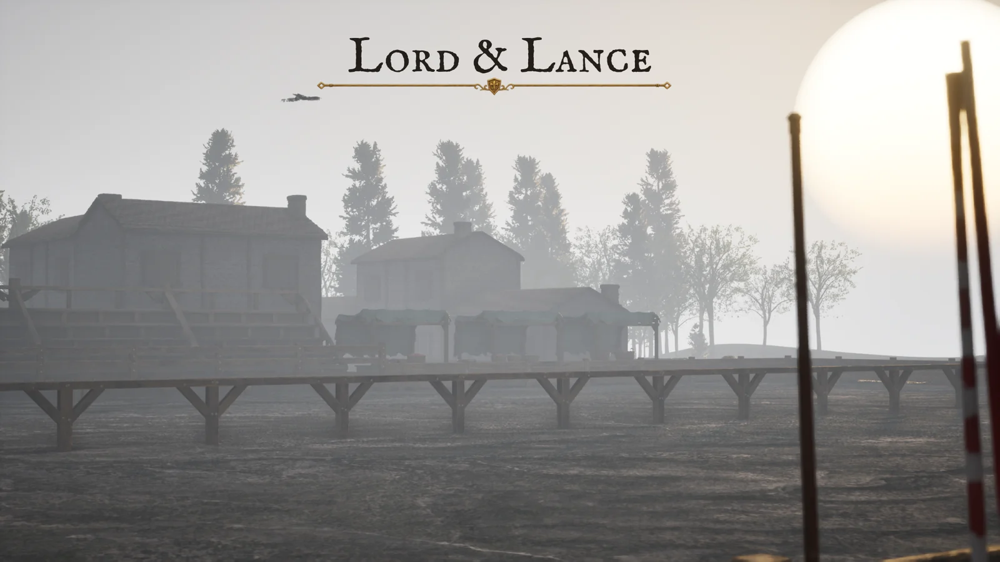
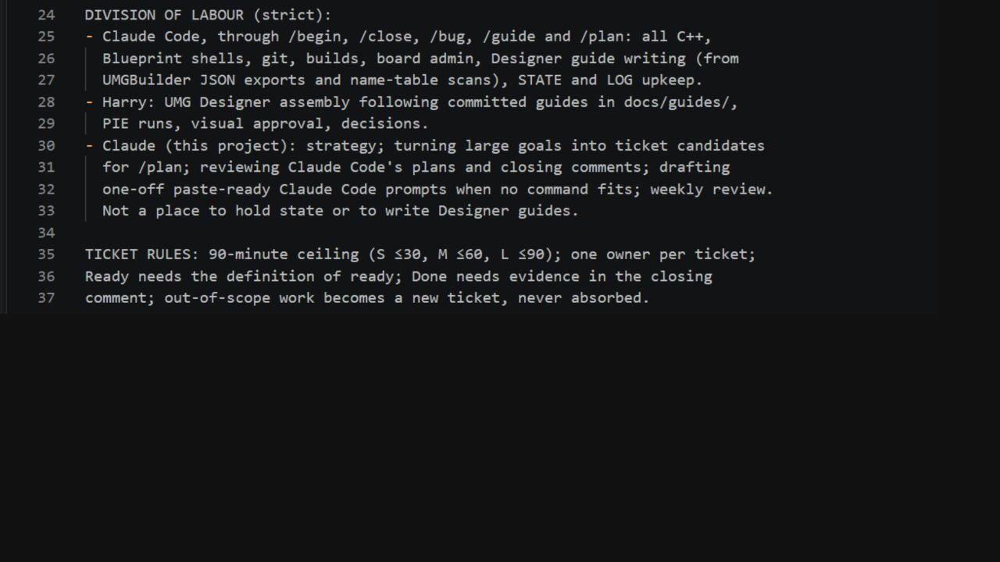
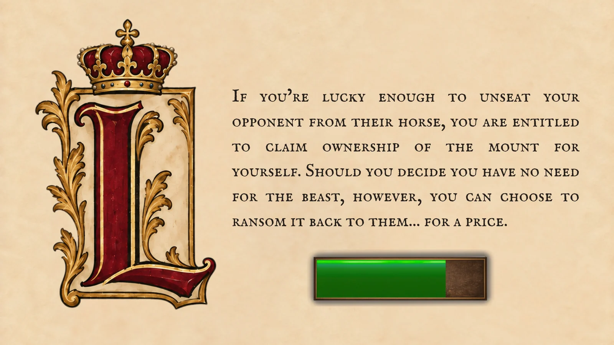

Designing the system that keeps an AI-assisted game project organised, reviewable and moving forward.
Role
Solo developer & creative director
Status
In development
Tools
Unreal Engine 5.8 · Claude Code · MCP
Focus
Workflow design · AI direction · Verification

Project image: the lists at dawn. This shows the visual direction of the game.
The project in a sentence
A ticket-driven development system designed around Lord & Lance, my ongoing Unreal Engine game project.
What this case study shows
How I design a development workflow around a large creative project: specifying the system, directing AI-assisted implementation and keeping design and verification under my control.
01 / The brief
Make the ambition manageable.
The idea is a medieval tournament management sim: build a roster, manage an estate and run a tournament season. Its systems need to connect, and its screens need to feel like parts of the same world.
The immediate challenge is organising interdependent C++, interface and asset work into tasks I can specify, review and resume around a full-time job. The workflow itself is the focus of this case study.
02 / My contribution
Direction, implementation and review.
I set the game design, visual style, UI layouts and acceptance criteria. I direct Claude Code through an Unreal MCP server for implementation, then review the changes against real logs and diffs.
My decisions
System design, specifications, UMG assembly, palette, typography, asset selection and the decision to accept or revise a result.
AI assistance
C++ implementation, technical tasks and first-pass artwork. ChatGPT image tools support artwork and portraits; Canva supports reference mockups.
The project also uses marketplace assets. My contribution is the direction, assembly, adaptation and validation of the overall experience.
03 / The method
Designing the system behind the build.
As UI, 3D assets and jousting development grew into parallel workstreams, long chat sessions became difficult to resume. I needed a workflow that could fit around a full-time job and survive interruption.
I wrote the requirements, reviewed the proposed structure and directed AI-assisted implementation of a GitHub Kanban and ticketing system. My brief called for small tasks, explicit human approvals, traceable changes and a reliable record of unfinished work.
Built around the work I can actually do.
01Backlog
02Ready
03In Progress
04Verify
05Done
The Verify column gives work awaiting my editor tests or visual checks its own queue. Owner labels distinguish coding, UI assembly, in-editor testing, decisions and art approval, so I can choose work that fits the time and tools available.
My direction and checks
I define requirements and constraints, approve plans, assemble the UI, run Play-In-Editor tests and make design and visual decisions.
AI-assisted delivery
Claude supports planning and review; Claude Code handles implementation, build tasks, board administration and documentation within the agreed workflow.
Scope before starting. Tickets target 30, 60 or at most 90 minutes. Larger work is split through planning; deviations need explicit agreement.
Ready has conditions. UI assembly needs a committed guide; editor tests need expected outcomes written in advance; coding tasks need their dependencies closed.
Done requires evidence. Each acceptance criterion needs a supporting log, file, export, render or commit in the close report. Out-of-scope findings become separate tickets.
Continuity lives in the repository. The close routine updates a current-state document and work log. Agreed files are checked before committing, so the next session can start from a recorded state.
01 / A board with explicit handoffs. The column descriptions distinguish work ready to start, work awaiting review and work accepted with evidence recorded. Ticket #50 is visible in Done; excerpts from its closing record appear below. View full board ↗
Choose a queue. Separate views organise work for me and Claude.
Make review visible. Verify holds work awaiting editor checks or review evidence.
Define completion. Done states that verification evidence must be recorded.

02 / Responsibilities written into the instructions. I wrote clear responsibilities and ticket rules into the system: a 90-minute ceiling, one owner, a definition of ready and evidence at closure.Read the rules shown in the excerpt
Claude Code: implementation, builds, board administration, UI assembly guides and state/log upkeep.
My role: UI assembly using committed guides, Play-In-Editor tests, visual approval and decisions.
Claude: strategy, ticket planning, review of plans and close reports, and weekly review.
Ticket rules: a 90-minute ceiling and one owner per ticket. Ready needs a definition of ready; Done needs evidence in the closing comment. Out-of-scope work becomes a new ticket.
Plain-language summary of the visible instructions.
A decision gets its own ticket.
Ticket #87 asks whether a losing tournament entry should receive a reward. It sets out three options, their effect on the player experience and the implementation each would require. The owner:harry-decision label makes the decision mine; the economy balance pass is explicitly dependent on that ruling.
03 / Options, consequences and a human decision. I use decision tickets to compare options before committing to implementation. Here, the reward rule is awaiting my decision. View readable ticket ↗
Ticket #50 / A recorded close
One ticket, from review to a recorded handoff.
Ticket #50 consolidated learnings from three archived project handovers into the standing instructions. Its closing record connects each acceptance criterion to a check, names the resulting commits and separates follow-up work from the completed task.
01 / Completion tied to criteria. The comment records 23 lessons added to the standing instructions, explains why I kept 15 elsewhere and lists new tickets for outstanding work. It names separate implementation and state/log commits. Read the closing checklist ↗
Check the project, then decide what comes next.
The verification excerpt records three checks against project files: menu event bindings, the ledger’s widget hierarchy and button-label bindings. The button check identified a naming mismatch and was filed as ticket #52 at priority P1. I keep the fix and retest in that follow-up ticket so they have their own acceptance criteria.
02 / Specific checks behind the report. File and widget references make the findings traceable. The excerpt also narrows the remaining ledger check to a visual inspection. Read the verification excerpt ↗
Keep approval and unfinished work visible.
I approved a scope change before the work exceeded its planned size. I approved creating all 11 follow-up tickets, accepting roughly 15–20 additional minutes. The report also separates an out-of-scope documentation issue and identifies two larger items that still need planning, plus two decisions waiting on me.
03 / An explicit exception and a usable handoff. The approval is recorded in the close comment. Remaining planning work and decisions are named so another session can pick them up. Read the deviation and handoff ↗See the supporting triage and follow-up records
Choose what belongs in the standing instructions. The triage table gives a reason for each of the 15 learnings not promoted, including duplication, a better document location or a rule specific to one asset.
Supporting record / Triage. Explains exclusions rather than silently discarding notes. Read the triage table ↗
Turn open items into an organised backlog. The follow-up table maps 11 findings to tickets #52–#62, with track, owner or planning designation, size and priority. Four other items have recorded reasons for not creating separate tickets.
Supporting record / Follow-up work. Captures ownership and next steps without treating new tickets as completed work. Read the follow-up table ↗
Tickets #51 and #64 / Refining the workflow
Improve the system when a risk appears.
Before trying two sessions together, I reviewed the plan with AI assistance and found a risk: both sessions would share a notes file that the close routine deletes. I directed the change in ticket #51 to give each ticket its own file and require an explicit ticket number at closure.
01 / Separate records, controlled closure. The report records checks of the three command files and the manual. It also records using the new convention for ticket #51 itself. Read the #51 closing record ↗
The rule I use when running two sessions.
Each session keeps its notes in scratch/session-<number>.md, so two sessions on two different tickets do not tread on each other.
Run /close <a> and wait for its 5-line summary before typing /close <b>.
Always give /close the number. With two session files present it cannot guess which ticket you mean.
02 / A rule I can follow. An excerpt from my operating manual, docs/system/WORKFLOW.md, “Running two sessions at once”. Download the selected source passages ↓
I close sessions one at a time and check for shared files, editors and builds. The close command reads, moves and deletes only the selected ticket’s notes.
Make session compatibility visible on the board.
Ticket #64 added three labels: needs-editor, needs-editor-closed and exclusive-session. Its closing report records checking their assignment across the 53 open issues at that time, with a reason for each classification and a final check for overlapping files.
03 / Labels backed by recorded checks. I use the closing checklist to connect the pairing rules, board checks and commits. Read the #64 checklist ↗
A lesson for the next iteration. At #64’s close, new tickets still needed their labels assigned manually. I kept that dependency visible: an unlabelled card must be checked before pairing sessions.
See the classification examples and follow-up notes
The classification excerpt distinguishes a rebuild requiring the editor shut from work that must run alone. It also shows examples assessed as needing none of the three labels, still subject to checking file overlap.
The final capture records judgement calls, the out-of-scope numbering issue, agreed deviations and the warning that label assignment was not enforced at creation.
Supporting record / Follow-up decisions. I keep judgement calls and remaining work in the close report. Read the follow-up notes ↗
04 / Visual direction
Set the visual direction before implementation.
I define a palette, typefaces and painterly visual references to guide the interface work. Reference artwork helps establish the intended direction while the C++ systems and production UI continue to evolve.

Loading-screen design artwork: a reference for layout and visual direction.
05 / Current state
A working process for a project in development.
Lord & Lance remains in active development, with C++ systems and interface work progressing through the ticket queue. This case study presents the development workflow, documented decisions and visual direction.
The main process lesson is to make verification part of the task definition. A small feature with a clear expected result is easier to review, explain and build on.
About this case study. I’m showing how I organise and direct AI-assisted development through tickets, decisions and review. The game’s C++ systems and interface are still in development; I’m not presenting finished gameplay here.